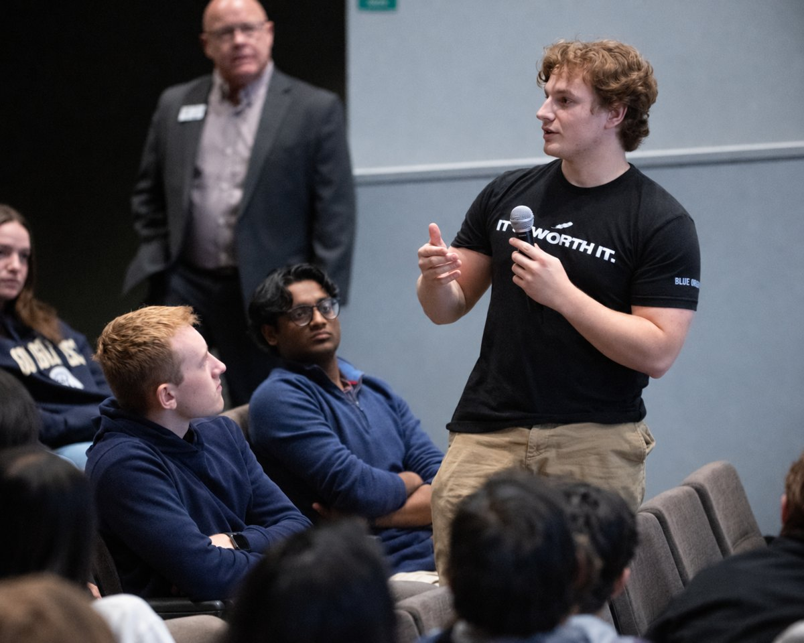

Blue Origin
Fluids & Manufacturing Engineering Intern

Cryogenic Tank Farm Design
Designed a cryogenic tank-farm P&ID for a critical-path ground-test facility. Sized, selected, and validated cryogenic piping, valves, and relief devices using Cv, Darcy-Weisbach, line-sizing, and overpressure-relief analyses, then developed the BOM and coordinated suppliers.
Performed preliminary hazard analysis and documented CONOPS for formal HAZOP review.
~60% fewer components than heritage designs.
Achieved by downsizing, eliminating branches, and challenging requirements.
Lunar Engineering
Analyzed a gripping fixture for lunar hardware like a flight structure: hand calculations and Creo FEA for torque resistance, bolt shear and tension, preload, slip, tear-out, bending, and CTE, against yield and ultimate margin criteria.